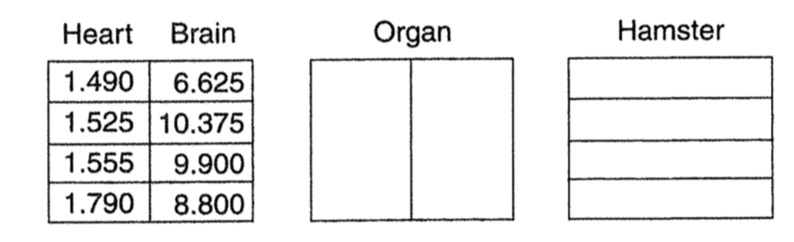

mean_v = 34.625
mean_h = 55.500
mean_p = 40.375
MSE = 157.01 #from our ANOVA source table
df_E = 45 #from our ANOVA source table
t <- qt(.975, df_E) #for 95% CI
n = 16 #this is a balance design!
LSD = t*sqrt(MSE)*sqrt(1/n+1/n)
LSD[1] 8.922785Question: Explain why it’s not sufficient to examine the four sample means, note that they all differ, and conclude that all races do have birth weight distributions that differ from each other.
Answer: Because this is just one a sample from a population. If we collected another sample we would see slightly different mean birth weights for the four groups. We need to consider if the group differences we see in this sample are greater than the differences we would expect from sample to sample.
When we do multiple significance tests (or construct multiple confidence intervals), our effective type I error rate is inflated. Most statisticians agree that we should adjust our type I error rate to account for our multiple tests, and control the familywise error rate.
Four methods for controlling the familywise :
Fisher’s LSD reasons that a pairwise difference is significant as long as it’s larger than the margin of error for that pairwise comparison. Thee step process:
\[LSD = t^*\cdot SD \sqrt{1/n_1+1/n_2}\]
For the sandwich ants.
mean_v = 34.625
mean_h = 55.500
mean_p = 40.375
MSE = 157.01 #from our ANOVA source table
df_E = 45 #from our ANOVA source table
t <- qt(.975, df_E) #for 95% CI
n = 16 #this is a balance design!
LSD = t*sqrt(MSE)*sqrt(1/n+1/n)
LSD[1] 8.922785For the sandwich ants. Fisher’s LSD is 8.923.
mean_h-mean_p[1] 15.125mean_h-mean_v[1] 20.875mean_p-mean_v[1] 5.75Based on Fisher’s LSD there are statistically significant differences between the number of ants on the ham and pickles filled sandwiches and both the peanut butter and Vegemite sandwiches, but not between the peanut butter and Vegemite sandwiches. Do ants like meat or pickles?!
The bonferroni correction simply takes our type I error rate (\(\alpha = .05\)) and divides by the number of tests we’re conducting. For sandwich ants it is 3. Here’s the n choose k formula again for sandwich ants:
\[{3 \choose 2} = \frac{3!}{2!(3-2)!}=3\]
#bonferroni correction
.05/3[1] 0.01666667We could conduct \(t\)-tests (or multiple regression!) for all pairs of conditions, but use an alpha of .0167 (instead of .05) to make your decision about rejecting the null hypothesis. Your \(p\)-value will need to be less than .0167 to reject the null hypothesis.
antsMod <- lm(Ants ~ Filling, data = SandwichAnts)
summary(antsMod)
Call:
lm(formula = Ants ~ Filling, data = SandwichAnts)
Residuals:
Min 1Q Median 3Q Max
-21.500 -10.094 2.938 9.500 22.375
Coefficients:
Estimate Std. Error t value Pr(>|t|)
(Intercept) 55.500 3.133 17.717 < 2e-16 ***
FillingPeanutButter -15.125 4.430 -3.414 0.00136 **
FillingVegemite -20.875 4.430 -4.712 2.38e-05 ***
---
Signif. codes: 0 '***' 0.001 '**' 0.01 '*' 0.05 '.' 0.1 ' ' 1
Residual standard error: 12.53 on 45 degrees of freedom
Multiple R-squared: 0.3449, Adjusted R-squared: 0.3158
F-statistic: 11.85 on 2 and 45 DF, p-value: 7.351e-05
Call:
lm(formula = Ants ~ Filling, data = SandwichAnts)
Residuals:
Min 1Q Median 3Q Max
-21.500 -10.094 2.938 9.500 22.375
Coefficients:
Estimate Std. Error t value Pr(>|t|)
(Intercept) 55.500 3.133 17.717 < 2e-16 ***
FillingPeanutButter -15.125 4.430 -3.414 0.00136 **
FillingVegemite -20.875 4.430 -4.712 2.38e-05 ***
---
Signif. codes: 0 '***' 0.001 '**' 0.01 '*' 0.05 '.' 0.1 ' ' 1
Residual standard error: 12.53 on 45 degrees of freedom
Multiple R-squared: 0.3449, Adjusted R-squared: 0.3158
F-statistic: 11.85 on 2 and 45 DF, p-value: 7.351e-05Using multiple regression with a bonferroni correction applied, what do we conclude about the differences in ants between filling conditions? Which comparison is missing?


Design 1: One-Way Randomized Design

Design 2: One-Way Complete Block Design

Design 3: Two-Way Factorial Design
Design 4: Split Plot/Repeated Measures Design
Design 4: Split Plot/Repeated Measures Design